Summary
My task was to design a website for Yattavision that aligned with the organization’s concept for a new, luxurious smartglasses product which emphasizes reliability, as well as physical and emotional wellbeing, as it’s key selling points.
The Problem
With instant access to a computer in your pocket that allows you to make phone calls, send e-mails, keep an organized calendar and browse the web, the smartphone has made life easier for many people in many ways. With that said, the smartphone is not without it’s problems. We’ll look down at our smartphones for extended periods of time, causing back and neck strain. We find ourselves distracted by our phones, both at work and at home. Even when we don’t, they become cluttered with notifications if we leave them unattended. Another common complaint is that voice assistant functionality on the user’s smart devices-regardless of device-is very sluggish and sometimes completely unresponsive.
The Solution
Yattavision brings all of the things that you love about your phone-the apps, e-mails, texts, wireless connectivity and more-and immerses them in a transparent display on these smartglasses that looks as if it is tethered to the real world.
In order to demonstrate the value of a product that people aren’t yet sure they want, I needed to uncover what some of the specific pain points are for smart device users. Armed with this information, I would develop a product page that highlights how this product would solve these pain points. The Yattavision product page would show also being easy to navigate and visually appealing. I knew that I needed to show how the product would eliminate the need for a smartphone and/or tablet and allow you to experience life through your own eyes, rather than through that device’s screen.
VIEW THE YATTAVISION WEBPAGEUser Survey
64% of respondents were between ages 25-34. This demographic would become the target audience for subsequent research and user testing.
67% of respondents utilize voice recognition software on their smart devices.
80% of respondents use them at least a few times per week, if not every day.
Several common trends were unearthed through a user survey:
-30% of respondents use their glasses all the time, while 50% use them at least a few times per week, if not every day. The remaining respondents use their glasses at least once a month.
-66.7% (8 users) of those surveyed utilize voice recognition software on their smart devices, buthalf of these users have mixed reviews of this software, finding it “inconvenient or embarrassing to use” and “not always accurate.”
-
-The most common frustrations shared among smart device users
are that they experience:
a) an onset of poor posture (45.2%)
b) back, eye and/or neck strain (18.2%)
c) distraction and/or disengagement from friends and family
(36.6%)
User Stories
I allowed multiple answers to several questions in the user survey to gather the best possible user stories. Specific user stories that emerged were as follows:
a) As a user, I would buy Yattavision glasses if they were affordable.
b) As a user, I would buy Yattavision glasses if they gave me the functionality of my smartphone, while alleviating my neck strain and posture issues.
c) As a user, I would buy Yattavision glasses if they allowed me to experience life through my own eyes, rather than through a device screen.
User Flows And Sitemap
Next, I designed user flows for the key navigations throughout the app. The first three fleshed-out user flows illustrated what a user could expect upon visiting the landing page, how a new user would sign up, how a returning user would sign in. The final user flow demonstrated the shared tasks that each user could take part in from the dashboard. I also created a site map that would show the overall flow of the app.
Competitive Analysis
- 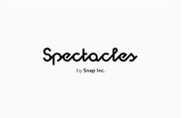
Microsoft Hololens is a headset with a screen attached to the face that is controlled by turning your head and utilizing hand gestures, in addition to recognizing voice commands. Hololens runs Windows 10, which enables compatibility with several different devices, while connectivity to Skype and the ability to play PC and Xbox games is also a major plus. The price (starting at $3,000 USD) is tremendously high and there are no plans for a consumer version until at least 2020.
Snapchat’s Spectacles are both sunglasses, as well as a camera that can also take 10-second videos and sync to Snapchat. The Spectacles are a great value for the price at $129.00, but the checkout process on the Spectacles website is lengthy-it brings you to three separate screens after clicking to buy. If a competitor could match, or come close, to the Spectacle price with all the features of a smart device built-in, Snap could be in trouble.
Moverio’s BT 300 glasses are ideal for those who like to fly drones, allowing users to capture and monitor their flight from a first person view. These glasses are powered by the Android OS and also offer built-in GPS navigation and bluetooth/wireless connectivity. Several reviews state that the app store and UI are very clunky and difficult to maneuver, also noting that there are a limited number of apps available for the device.
Branding/Style Guide
As I began to design the logo, I knew I wanted something that personified the product I was showcasing. I knew it was going to be a design with an emphasis on the AR scanner that would bring this product to life. I first started with sketches of my own glasses, then created a very simplistic glasses logo in Illustrator. After placing it on the mockup pages, I felt (and user testing confirmed) that it felt disconnected from the rest of the page, which had more rounded buttons and rounded placeholders. I went back to the drawing board and created a more abstract design that focused solely on the AR scanner that differentiates the product from the competition. For the logo typography, I chose to go with a Bariol font which complements the page design and has the same green color that is central to the color scheme.
Low Fidelity Wireframes
- 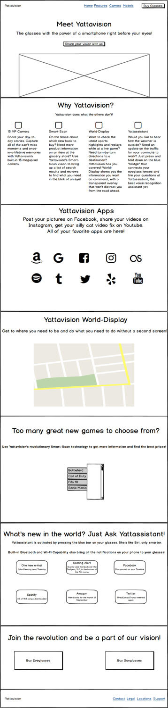
- 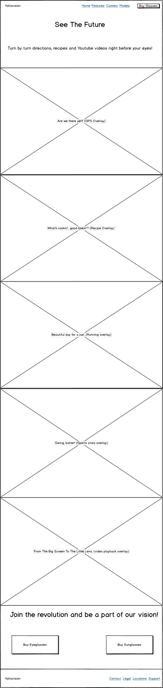
- 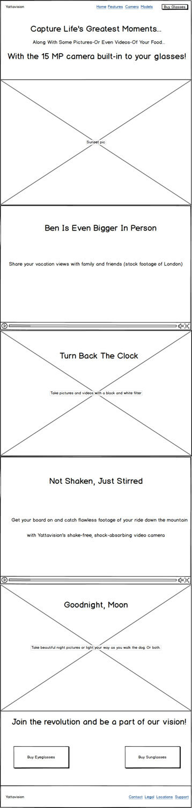
For the initial user flow and wireframes, I took the feedback that I received from user interviews and user surveys and translated those into a four page website that would demonstrate how Yattavision would alleviate the frustrations of the average smart device user. Drawing inspiration from Apple’s iPhone website, Samsung’s Galaxy website and Snap’s Spectacle website, the idea was to create a responsive website with a main landing page, a features page, a page showcasing the camera’s features and a purchase page. I created mockups that were optimized for desktop/laptop viewing first, but would also account for those who view the website on a smartphone or tablet.
High Fidelity Mockups
Next, I began designing high fidelity wireframes in Adobe Illustrator. I made a few changes made from the initial wireframes, which were:
1. The images in each section were made slightly smaller-940x600 instead of 1000x600.
2. The off-center “Buy RX Glasses” call-to-action button was brought back up several pixels to be aligned horizontally with the “Buy Eyeglasses” and “Buy Sunglasses” section, before being changed to just one single, centered, “Buy Glasses” button.
3. The placeholder under the “Meet Yattavision” section of the landing page was removed and the header and sub-headline font sizes were decreased from 48 and 36 px, respectively to 30 and 25 px, respectively. The rest of the text sizing was decreased as well, in order to give the page a better sense of hierarchy and readability.
4. I went with an Open Sans font across the pages, rather than having PT Sans as paragraph text as well.
5. The features page remained the same, while I altered the Camera page to remove the top image and lay the features of the camera out on a blank background.
6. The pricing pages were redesigned to keep with the rounded rectangle input field scheme and give the page a cleaner, crisper look.
- 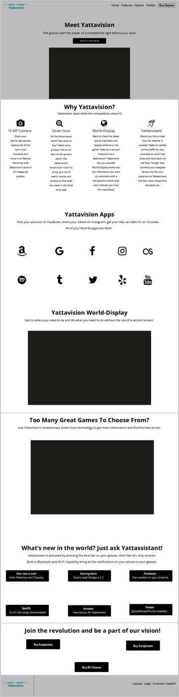
- 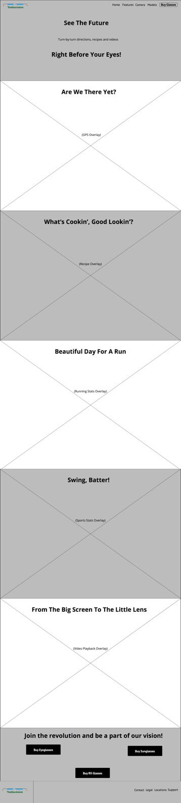
- 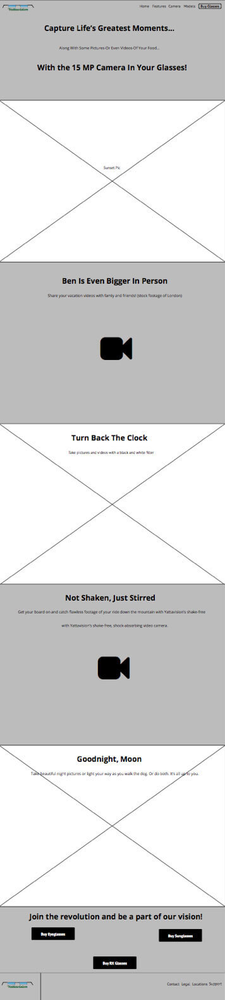
- 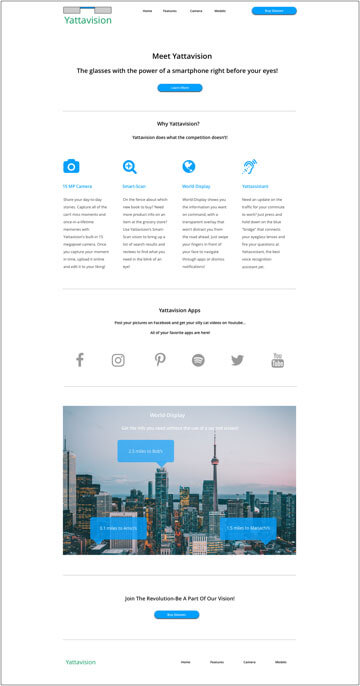
- 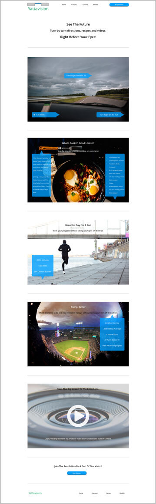
- 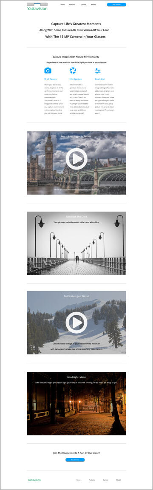
- 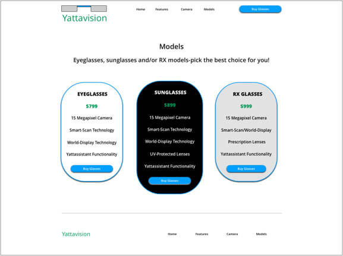
- 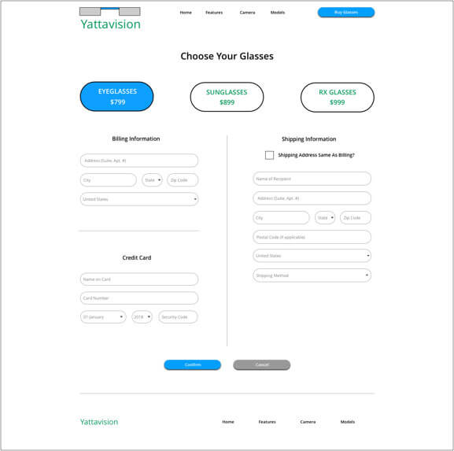
After this round of iterations, I could tell the four page design just wasn’t working. I felt that I was not effectively conveying the lessons I’d learned about good design and color theory. The design was admittedly, mediocre at best. Subsequent user testing and an initial assessment confirmed these thoughts. I went back to the drawing board and decided to simplify the design to a one-page product showcase that would focus more on displaying what I’ve learned about effective use of white space, page hierarchy and effective color use.
Initial user feedback showed that the neon colors were sometimes difficult to read, with mentors Jenna and Chris commenting that it would be better to center on a blue or green color and work with different shades of that color to create an appealing design. I settled on a darker blue, #264EBF, and went to work crafting a design that revolved around different shades of that color, with #009700 serving as the clear “call to action” color-a contrast from the different shades of blue. The final result-along with mockups of how the site would display on a tablet and mobile phone-can be seen below.
- 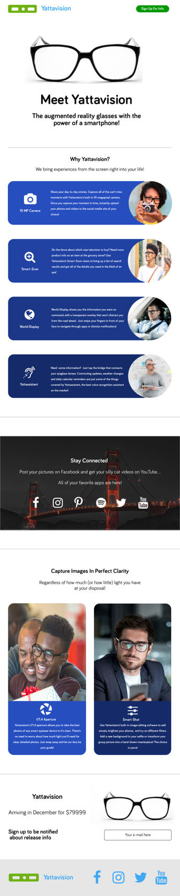
- 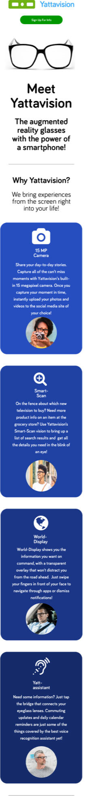
User Testing
User Test 1-Veronica
My first user test was with Veronica, 28, a Senior Marketing Communications Specialist in New York, New York.
She thought that improvements could be made to the copy within the website. She noted that the page was coming off as “very salesy.” She said that the “Why Yattavision? We Do What The Competition Doesn’t!” headlines should be changed-she noted “this is an experiential product-you have to make the customer feel like they are about to use it.” I made some cosmetic changes to update the copy in these areas.
On the Features section, Veronica thought some of the language was repetitive (i.e., so I cut out some of the text in these sections and altered for better copy. For example, “Capture all of the can’t miss moments and once-in-a-lifetime memories” was shortened to just “Capture all the can’t miss moments…” Veronica also suggested moving the “Stay Connected” section to the bottom of the page and/or doing something to reinforce the social media connection to the product near the bottom of the page as well to drive the point home.
Veronica stated, “I think that the site looks “really good,” but-coming from a marketing perspective-changes to the copy would help to take the page a step further.
User Test 2-Austin
My second user test with was with Austin, 29, a Fundraising Account Manager in Buffalo, New York. He was able to correctly identify what the product was, noting that it looked like a more advanced set of Snapchat glasses. He said that-from a UI perspective-having things pop up while he is driving would be distracting and "freak me out." He could not correctly tell what every application under the App section and found it cramped, so I revised that in this final interaction to remove the lesser known apps (i.e. LastFM) and cut the number of apps listed from twelve to six. One of the key things that he mentioned was that he liked the "call to action buttons" at the top and bottom of the page. He did suggest changing the button on the top to say “Sign Up” instead of “Buy Glasses,” since they were not yet available. The second key suggestion that he made was to place social media icons on the footer of the page, as he sees that many of the companies he works with do this. These changes were accounted for in the final version of the project.
Austin stated, “Overall, the design looks very professional, the typography is easy to read and explains what the product is and does. There is nothing about this site that is convoluted or confusing.
User Test 3-Shawn and Liz
The next user test I conducted was with Shawn-a former self-taught Javascript developer-and his wife, Liz, who studies Psychology for a living. Shawn said he can easily tell that these are glasses which offer Augmented Reality technology. Liz noted that she has degenerative eye troubles, but reported that she did not have any problems reading through the page on her iPhone. She stated this would be a very useful product that would be helpful to her on a daily basis. Shawn said that there was not much else he could comment on as it was a one-page showcase and not a multi-page site.
Shawn stated, “This is a very clean looking website,” while Liz added, “ the font is very easy to read and I don’t have any trouble reading through the page on my iPhone, even with my eye issues.”
After this round of user testing, I successfully developed and deployed the Yattavision project.
VIEW THE YATTAVISION WEBPAGEConclusion
This was my first design project, so in addition to learning the ins and outs of the design process, I would say that the most rewarding parts of this project were learning the ropes of an agile development process, learning how to conduct user interviews and building user personas. Building this site was a great exercise in building a basic foundation of knowledge in the field of User Experience Design and I intend to keep working to increase my knowledge and skill level.
In closing, I have learned that it’s not about reinventing from a UI perspective, nor is it about what the designer thinks works best. In contrast, it’s about learning what works best for users and reiterating on designs until you can deploy a product that is accessible and as user-friendly for as many people as possible. This was a good starting point towards those goals and I look forward to applying the knowledge I’ve begun to learn here to build bigger and better applications in the future.
BACK TO TOP RETURN TO HOMEPAGE